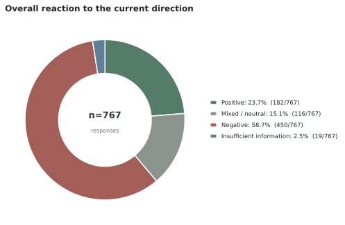
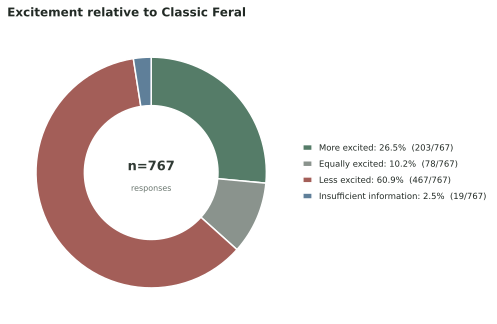
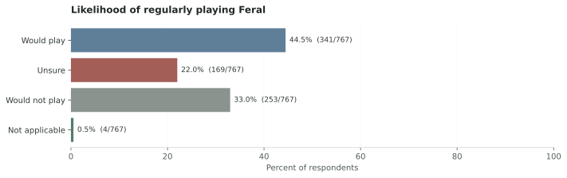
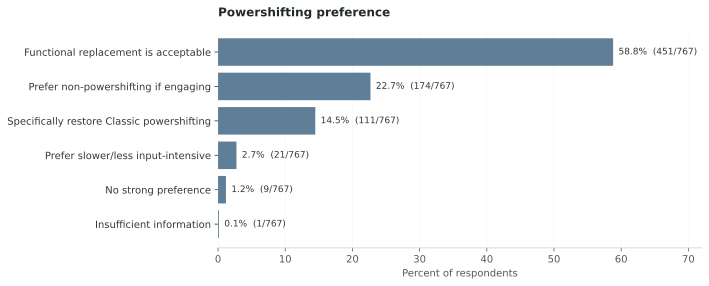
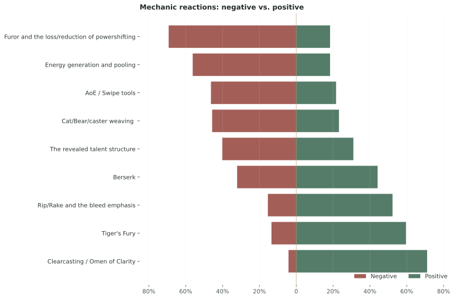
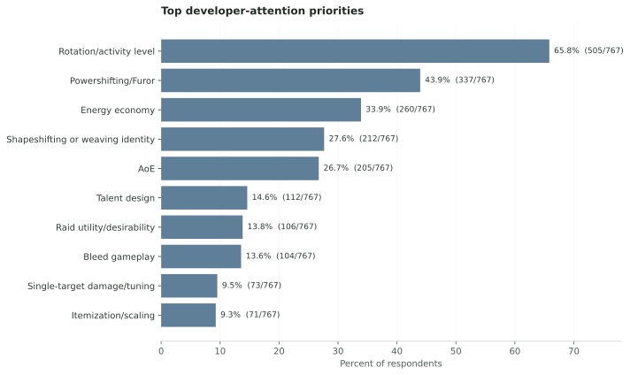
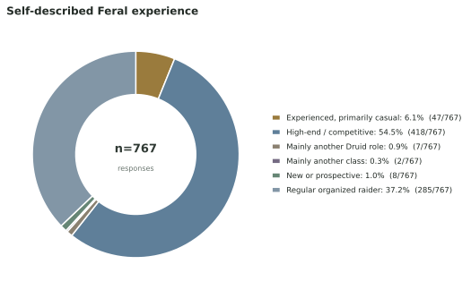

Current sentiment is negative.
A majority feels negative about the current direction, and 60.9% feel less excited than they do about Classic Feral.
COMMUNITY FEEDBACK · 767 RESPONSES · SEPTEMBER 20–21, 2026
This report separates the argument over literal powershifting from the broader design question: how should Feral preserve activity, resource decisions, mastery, and a meaningful reason to use more than one form?
Scope: a rapid, self-selected survey of engaged players reacting to the public and test-build design available September 20–21, 2026. The survey did not record a specific build identifier, and Bear-focused respondents evaluated the direction much more favorably.
THE SHORT VERSION
A majority feels negative about the current direction, and 60.9% feel less excited than they do about Classic Feral.
58.8% would accept a functional replacement, while 22.7% actively prefer an engaging non-powershifting design.
This is the share who rated “Furor and the loss/reduction of powershifting” somewhat or very negatively. It does not measure support for one specific replacement.
The clearest reading is not “everyone wants Classic powershifting back.” It is: if powershifting goes away, the replacement still has to make Feral active, thoughtful, expressive, and recognizably Druid.
PROJECT INTENT
I’m JVMES in the Druid Classic Discord. I started this project after watching the Forever reveal discussion collapse several different questions into a single yes-or-no fight over powershifting. My concern was broader: removing powershifting could also remove the activity, resource conversion, and form-based decisions that made Feral rewarding unless a deliberate replacement took their place.
I did not create the survey to prove that Classic powershifting must return. It was designed to test whether that concern was shared, distinguish attachment to a mechanic from attachment to the experience it produced, and keep separate issues such as bleeds, hybrid play, AoE, utility, scaling, and raid value from being treated as one complaint.
The intended output is a practical brief for Blizzard’s developers: not a petition for one implementation, but a map of where respondents are flexible, what they consistently prioritize, what the reveal already gets right, and which problems still need a direct design answer.
Exports from #forever-general, #forever-feral-dps, and #forever-feral-tank, along with a public r/classicwow survey announcement, document why and how the project began. They provide context only. They were not coded, counted, quoted, or included in the analysis; the survey responses are the evidence used below.
HOW THE REVEAL LANDED
Interest in playing Feral is more resilient than excitement about the design. That gives developers room to win people back, but not a reason to dismiss the criticism.



WHERE THE SIGNAL IS CONCENTRATED
The overall number should not be read as uniform rejection of every Feral role. Primary interest and direct test-build exposure materially change the result.
Bear-focused respondents evaluate the revealed direction much more favorably than Cat- and hybrid-focused respondents.
Direct players are less negative than respondents evaluating from detailed public information, but a majority of test-build players remain negative.
These are descriptive comparisons inside a self-selected sample. Primary-interest and familiarity groups answer different questions and should not be compared as if they were one partition.
THE POWERSHIFTING QUESTION
Only 14.5% chose literal Classic-style restoration as their closest view. Separately, 56.1% included restoration among several options they would test. These results are compatible: willingness to test a mechanic does not mean requiring it as the final design. The importance, agreement, priority, and written-response questions independently reinforce the demand for activity, resource decisions, and mastery.

WHAT TO KEEP
The criticism is not a rejection of everything new. Several individual ideas are well received and give the design a foundation to build on.

WHAT NEEDS WORK
Rotation and activity dominate the requested attention. Energy and powershifting are closely related, but AoE, hybrid play, talents, and raid value should not be reduced to the same argument.

Test powershifting, faster or resettable Tiger’s Fury, richer Clearcasting interactions, bleed-driven resource gains, and other resource-conversion ideas against the same goal: less empty time with meaningful choices.
Cat/Bear/caster weaving and hybrid off-tanking matter independently of literal powershifting. Form changes should create decisions rather than punish the player.
Clearcasting, Tiger’s Fury, and bleed identity are strong starting points. The bleed direction needs interaction and payoff, not only passive maintenance.
Swipe effectiveness, multi-target toolkit coverage, dungeon usefulness, raid desirability, tanking, and numerical tuning are not automatically solved by changing the Cat rotation.
70.3% rate resource decisions highly; 65.8% prioritized activity; 56.2% react negatively to the energy model.
Create meaningful resource decisions without excessive empty time.
Tiger’s Fury changes (64.1%), Classic powershifting (56.1%), resource conversion (44.6%), or Clearcasting interactions (41.3%).
72.4% disagree that the current design preserves shapeshifting identity.
Make leaving Cat situationally valuable rather than automatically punitive.
Intentional Cat/Bear/caster incentives (45.2%).
52.3% react positively to bleed emphasis.
Turn the accepted theme into active decisions and payoff while accounting for bleed immunity, ramp time, and target switching.
Bleed-driven energy or active interactions (55.0%).
46.3% react negatively to AoE / Swipe.
Give Cat and Bear dependable value in routine multi-target play.
Author synthesis from the AoE response signal and written feedback: evaluate Swipe effectiveness, multi-target toolkit coverage, and tuning independently of the single-target loop.
Quantified candidate levers are options respondents said they would be open to testing, not votes for a final implementation. The AoE follow-up is explicitly labeled as author synthesis. The survey identifies design constraints; playtests and telemetry must determine the solution.
RECURRING LANGUAGE
Across the three open questions, recurring phrases connect the same ideas in different ways: activity, energy, skill expression, form use, weapon scaling, bleeds, and specific alternatives to the revealed Furor model.


Cloud sizes are relative within each question. The ranked counts show how many distinct responses contained each phrase; even the largest phrases occur in a minority of answers. These are language patterns, not separate survey votes.
SAMPLE COMPOSITION
54.5% selected “high-end or competitive,” while 37.2% selected “regular organized-raiding.” That concentration defines whose priorities this report captures most clearly.

The survey did not collect combat logs, parses, rankings, progression, account history, or any other external measure of performance. The category indicates how respondents identify their own relationship to Feral; it does not establish their actual competitive level.
Within this sample, the self-described high-end/competitive group was more negative about the current direction (65.8%) than regular organized raiders (52.6%) or the combined casual/newer/other group (39.1%). That is a descriptive association, not evidence that competitive experience caused the difference.
IN THEIR OWN WORDS
These full excerpts were deliberately selected to illustrate contrasting design concerns. They were manually reviewed, stripped of accidental identifiers, and come only from respondents who allowed anonymous quotation. They provide context, not evidence of how common each view is.
AoE and group viability“While feral shouldn't be the best in this regard, it needs some form of aoe cleave potential to be desirable in endgame pve content. With the other Druid specs, especially bear, and DPS specs getting significant buffs, i expect it to be very difficult to find groups as a ferals dps at max level. This will eventually lead to social pressure into playing feral tank or a dps spec that that can contribute more to a dungeon or overall raid clear. An easy fix would be the inclusion of cat swipe or primal wrath (aoe rip with decreased effectiveness/duration) with appropriate tuning.”
Functional replacement“Given Feral druids previously high APM gameplay, design should be pushed in that direction. Preferably, however, not through powershifting. Powershifting is a clunky, outdated mechanic that invalidates energy, making the class clunky to play and harder to balance. I write this as someone who has powershifted in every expansion it is available, and will do so in Forever if it is the best dps rotation. However, I think other alternatives (tiger's fury resets, clearcasting, etc. would be much better).”
Hybrid and off-tank play“Meaningful shapeshifting from bear to cat while offtanking to contribute damage, as frequently as the player is confortable to secure a kill, while the damage contribution feels rewarding. TL/DR monobear for new players who play for the kill, and warden for experienced players who want to min-max on a spectrum. The best example here is TBC hunter melee weaving. It is always a dps increase to weave, irrespective of the party buffs, ranged vs melee weapon discrepancy or frequency of the weaves. I want this for feral while offtanking, shifting into cat should not be required, but should always provide a dps increase.”
Shapeshifting without powershifting“Feral in Vanilla-Wotlk has a strong identity as a dual purpose spec that is very good at In-encounter offtanking. Not dual talent swapping between boss fights, but being able to tank one moment when needed on adds or a specific mechanic and dps at another. This gives them unique value and also emphasizes the fact that you are not just playing cat or bear but feral as a whole spec that plays into the shapeshifting RPG fantasy of druid. The current talent trees make it much harder to do this which is disappointing as you have to spec more heavily for mono-cat or mono bear, where the original vanilla and TBC trees are much more friendly towards it. On top of this, while bear has had improvements to its gameplay, feral cat which is generally considered the most fun and engaging aspect of the spec has been completely gutted and had its action economy and skill expression removed. While my personal ideal version of feral is TBC as I think it allows for the best balancing and identity between the 3 tanks (warrior single target survival, paladin AoE, Bear offtank ST threat with high dps potential) it is still possible to make a version work without powershifting and I accept that. I enjoy the playstyle and would prefer it, but so long as the shifting based gameplay with high action and skill expression as well as hybrid shifting potential is preserved I can accept alternatives. This is my favorite spec and class and the reason I have play the game in any expansion, and I really hope the things that draw players to the spec can be preserved in some way.”
Activity and resource decisions“The current feral design has far too much downtime. What is fun about playing feral in classic is always having buttons to press. Using your mana resource to gain energy via shifting meant that you always had something to do and decisions to make moment to moment that impact your dps and your value to a group. Standing still and auto attacking a boss because you dont have the energy resources to use your abilities is antithetical to the feral class dps experience.”
WHO ANSWERED
This report covers 767 valid responses collected from September 20, 2026 at 10:01 AM through September 21, 2026 at 6:55 PM. 408 respondents played the test build, while 331 closely reviewed or discussed it.
Recruitment through community channels produced a rapid, self-selected response. That makes the survey useful for understanding these engaged respondents’ priorities, but not representative of every potential Forever player.
BOTTOM LINE
These respondents give the design team room to move beyond Classic powershifting. Their consistent expectation is that Cat Feral should stay active, reward mastery, make resources matter, and retain meaningful reasons to shapeshift.